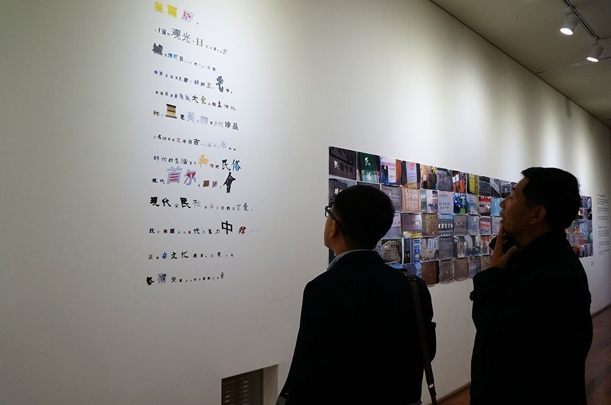

首尔游记 | SEOUL TRAVEL
相纸打印 ，直接粘贴在墙面 ，可变尺寸 ，2013
Photographs, mage printed on the picture, paste the wall，Variable, 2013
2013年代表中国艺术家参加由中国政府和首尔政府举办的一个文化交流活动。在首尔考察的七天时间内，用在首尔街头巷尾拍摄的中国字，最后组成了一篇游记散文《首尔游记》。
1980年代韩国民主化运动废除了汉字，汉字消失在韩国社会文化中。
In 2013, as a representative of Chinese artists, I took part in a cultural exchange jointly held by the Chinese government and the Seoul government. I produced a travelogue titled Seoul Travels with those Chinese characters which appeared in the photos I had taken during the seven days in Seoul.
In 1980s, Chinese characters were abolished during the Democratic Movement of the ROK and then disappeared in Korean society and culture.

首尔市政府展厅，首尔
Citizen`s gallery Seoul City hall, Seoul
首尔市政府展厅，首尔
Citizen`s gallery Seoul City hall, Seoul
首尔市政府展厅，首尔
Citizen`s gallery Seoul City hall, Seoul